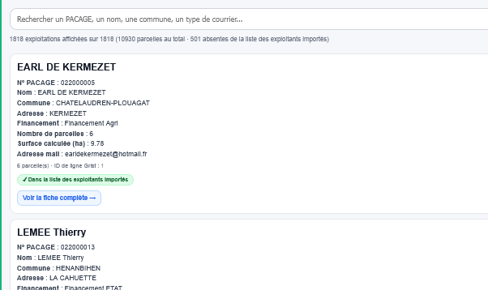

DRAAF
BRETAGNE Direction régionale de l'alimentation,
de l'agriculture et de la forêt
Campagne de mesure des reliquats azotés en Bretagne
S'appuyer sur Grist et Démarche Numérique, de l'identification des exploitants aux prélèvements
DRAAF · instruction
Agriculteurs
Préleveurs · laboratoires
Phase 1 · Campagne Démarche Numérique
Phase 2 · Prélèvements
Agriculteurs
DRAAF
instruction & cellule numéro vert
instruction & cellule numéro vert
Préleveurs
laboratoires
laboratoires
2Reçoit un courrier avec son code unique
Envoyé par publipostage depuis Grist, avec mail et SMS de rappel
4Complète sa démarche
La démarche s'ouvre pré-remplie ; il vérifie et saisit seulement les champs manquants
6Appelle le numéro vert en cas de difficulté
Un agent l'aide avec son dossier et ses données à l'écran
11Accueille le préleveur sur sa parcelle
Rendez-vous fixé par téléphone, sur le mobile indiqué dans la démarche
1Base des exploitants dans Grist
- Liste des exploitants identifiés déposée dans Grist
- PACAGE, SIRET, coordonnées, parcelles et cultures PAC
- Un code unique par exploitant
3Widget de pré-remplissage
Grist alimente la démarche par auto-remplissage, à partir du code unique :
- données administratives
- données PAC (îlots, cultures)
5Dossiers dans Grist et recherche rapide

Retour automatique des dossiers DN. Recherche par PACAGE, raison sociale, SIRET… (widget HTML/JS)
7Tableau de bord de la campagne

Dossiers saisis / attendus, par département, anomalies, appels
10Suivi des prélèvements par la DRAAF
Mêmes outils que les laboratoires : on voit en temps réel où en est chaque parcelle
Effectué
Programmé
À faire
Contrôle qualité des préleveurs et des lieux de stockage par les inspecteurs
Une fois la campagne Démarche Numérique terminée, les parcelles retenues ouvrent la campagne de prélèvements
8Calendrier
lun
mar
mer
jeu
ven
Développement spécifique
9Carte
EffectuéProgramméÀ faire
1 317exploitants
identifiés
identifiés
1 365dossiers déposés
sur Démarche Numérique
sur Démarche Numérique
479appels au
numéro vert
numéro vert
4départements
22 · 29 · 35 · 56
Données au 19/11/2026
22 · 29 · 35 · 56